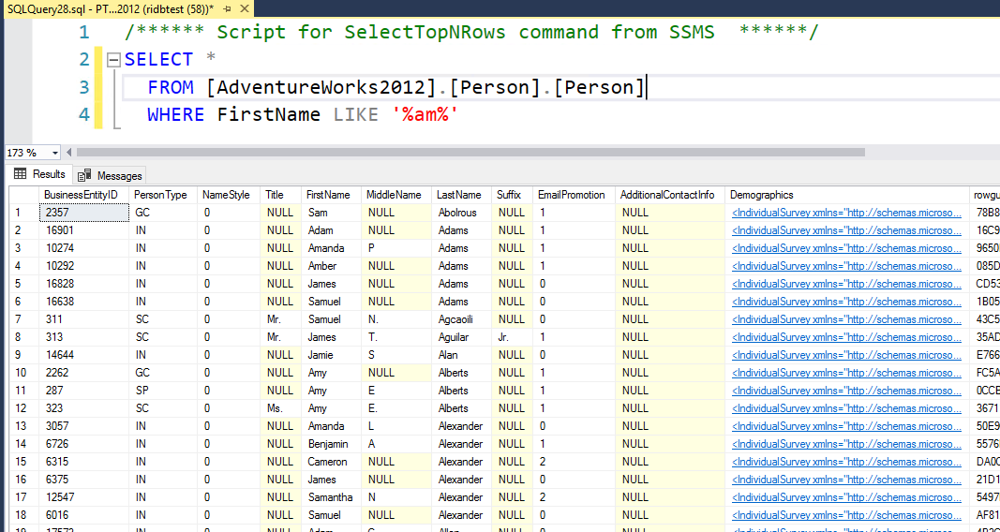
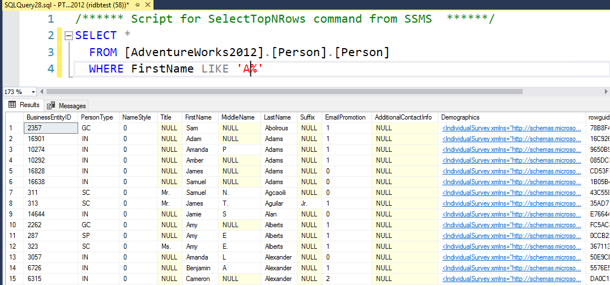
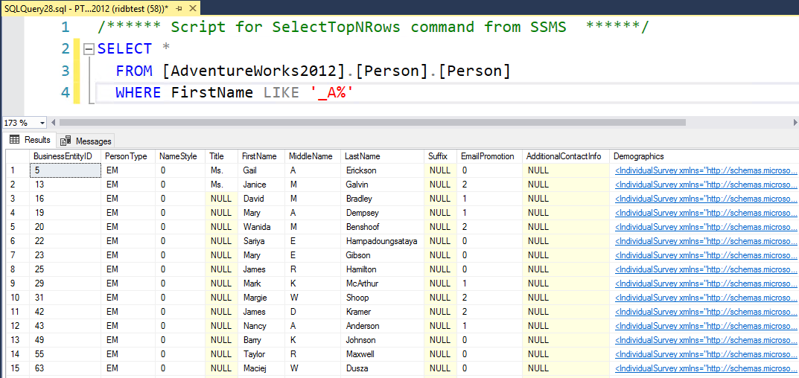

SQL Operators
Operators are used to do comparisions, arithimetic operations etc. The different types of OPERATORS we use on day to day basis are:
1.Arithmetic operators
2.Comparison operators
3.Logical operators
4.Bitwise Operators
1.Arithmetic operators
| Operator | Name | Decsription |
|---|---|---|
| + | Addition | Adds or Concatenates the variables. |
| - | Subtraction | Subtracts the right hand variable from the left hand variable. |
| * | Multiplication | Multiplies the variables. |
| / | Divison | Divides the left hand variable by the right hand variable. |
| % | Modulus | Divides the left hand variable by the right hand variable and returns remainder. |
2.Comparison operators
| Operator | Name | Decsription |
|---|---|---|
| = | Equal to | Checks if the values of two operands are equal or not, if yes then condition becomes true. |
| != | Not equal to | Checks if the values of two operands are equal or not, if values are not equal then condition becomes true. |
| <> | Not equal to | Checks if the values of two operands are equal or not, if values are not equal then condition becomes true. |
| > | Greater than | Checks if the value of left operand is greater than the value of right operand, if yes then condition becomes true. |
| < | Less than | Checks if the value of left operand is less than the value of right operand, if yes then condition becomes true. |
| >= | Greater than or equal | Checks if the value of left operand is greater than or equal to the value of right operand, if yes then condition becomes true. |
| <= | Less than or Equal | Checks if the value of left operand is less than or equal to the value of right operand, if yes then condition becomes true. |
| !< | Not less than | Checks if the value of left operand is not less than the value of right operand, if yes then condition becomes true. |
| !> | Not less than | Checks if the value of left operand is not greater than the value of right operand, if yes then condition becomes true.. |
3.Logical operators
| Operator | Decsription |
|---|---|
| ALL | Checks if all of the subquery values meet the condition. |
| SOME | Checks if any of the subquery values meet the condition. |
| OR | Displays a record if the condition(s) is NOT TRUE |
| LIKE | Checks if the operand matches a pattern. |
| IN | Checks if the operand is equal to one of a list of expressions. |
| EXISTS | Checks if the subquery returns one or more records. |
| BETWEEN | Checks if the operand is within the range of comparisons. |
| ANY | Checks f any of the subquery values meet the condition. |
| AND | Checks i if all the conditions separated by AND is TRUE. |
4. Bitwise Operators
| Operator | Decsription |
|---|---|
| & | Bitwise AND. |
| | | Bitwise OR. |
| ^ | Bitwise exclusive OR. |
How to use these Operators
Here are some Screenshots of how you can use the Operators. If used in correct way , they can help is powerful SQL transformations , data mining , data analysis.
We will use [AdventureWorks2012].[Person].[Person] table for this Operator
SQL LIKE Operator
The LIKE operator is used inside a WHERE clause . This helps us to serach for certain word or patterns of Strings in a Unstrcutred text.
In the world of Data , most of the useful parts are present in Unstructured texts, like doctors notes, tweets on Twitter, Notes written in books etc. So if we learn this Operator well enough , it will prove very helpful
Below are 6 different types of using LIKE operator
Lets assume the two letters we want to use are Letter1 and Letter2
1.'%Letter1%'
We can search to see if there are any words which have the two letters 'am' in between them at any point by doing..
2.'Letter1%'
We can search to see if there are any words starting with letter 'a' by doing..
3.'%Letter1'
We can search to see if there are any words ending with letter 'a' by doing..

4.'_Letter1%'
We can search to see if there are any words ending with letter 'a' and has only One letter before it by doing..
5.'%Letter1_'
We can search to see if there are any words starting with letter 'a' and has only One letter before it by doing..

6.'%Letter1%Letter2%'
We can search to see if there are any words which have the letter 'a' and has 'm' at any point in order by doing..

Overall , if we use %- that means there could be any letter - one or more. Using _ means only one letter, if we can two letter we can use _ two times (__).